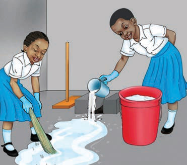
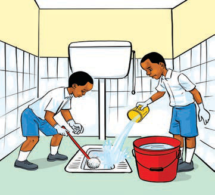

Maswali
1. Je, ni matendo gani yanayofanyika katika picha a-d?
2. Kwa nini tunasafisha choo?
3. Kwa nini tunanawa mikono kwa kutumia maji safi na sabuni baada ya kufanya usafi?
Soma kisa mafunzo kifuatacho, kisha jibu maswali
Chausiku anasoma darasa la pili katika Shule ya Msingi Upepo. Siku moja alipata homa kali. Alipelekwa kituo cha afya na kupatiwa matibabu. Baada ya kupona, alirudi shuleni. Chausiku aliwaambia wanafunzi wenzake kwamba aliugua ugonjwa wa malaria. Wanafunzi wenzake walitaka kujua chanzo cha ugonjwa huo. Chausiku aliwaambia kama alivyoelezwa na daktari kuwa “malaria husababishwa na vijidudu vinavyoenezwa na mbu. Mbu huzaliana katika
AFYA NA MAZINGIRA STD TWO 2 2024.indd 28
17/09/2025 12:19:10